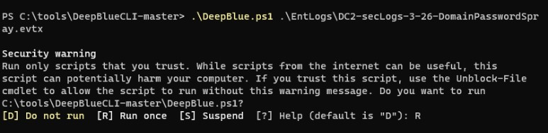

Domain Log review with DeepBlue
Introduction
In this project, the focus is on investigating logs related to a domain password spray attack using the DeepBlueCLI tool. The steps involved are as follows:
Extract the event logs, extract the event logs from the "EntLogs" directory using 7-Zip and save them in the "C:\tools\DeepBlueCLI-master" directory.
Use DeepBlueCLI: Open a Terminal as an Administrator and navigate to the "C:\tools\DeepBlueCLI-master" directory. Execute the DeepBlueCLI script to analyze the Windows event logs.
Analyze the DC2 Password spray file: Run the DeepBlueCLI script with the command:.\DeepBlue.ps1 .\EntLogs\DC2-secLogs-3-26-DomainPasswordSpray.evtx
Respond with "R" when prompted to start the script. DeepBlueCLI will analyze the log file and generate alerts. Investigate the event logs: Open Windows Event Viewer and navigate to the"C:\tools\DeepBlueCLI-master\EntLogs" directory.
Open the "DC2-secLogs-3-26-DomainPasswordSpray.evtx" file in Event Viewer. Sort and analyze the logs: Sort the logs by Event ID in Event Viewer. Look for Event ID 4776, which represents the Credential Validation Event log. Examine the logon attempts: Select individual logs with Event ID 4776 and observe the "Logon Account Name" in the General tab. Note the high number of login attempts from a single system. Note audit failures: Pay attention to Audit Failures mentioned at the bottom of the General tab. These indicate that the workstation "WINLABV2WKSRL-9" attempted to authenticate with numerous Logon Accounts within a short period.